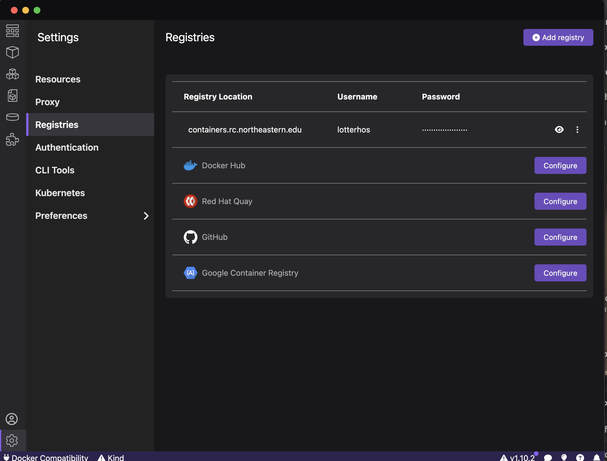
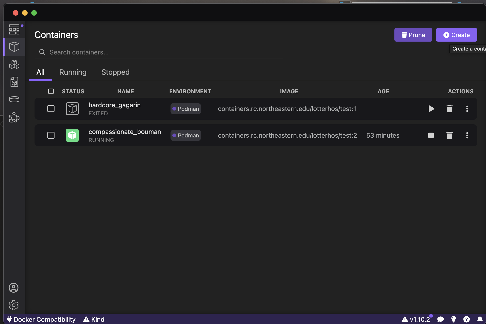
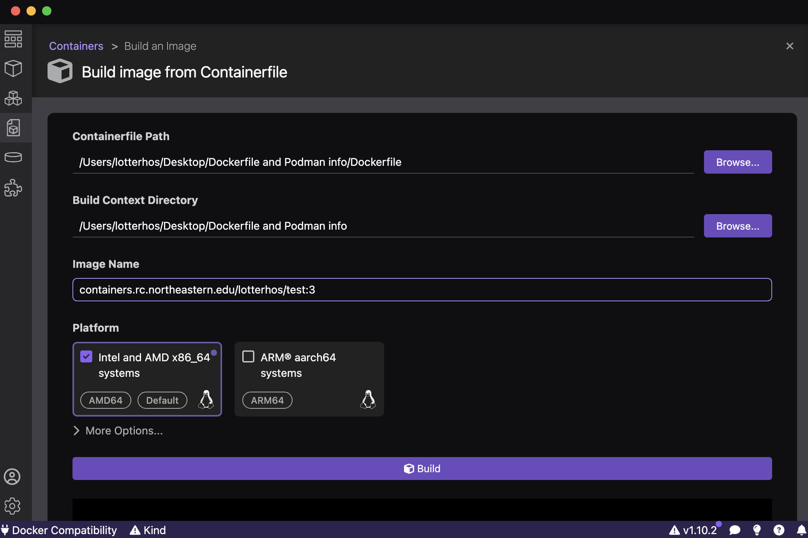
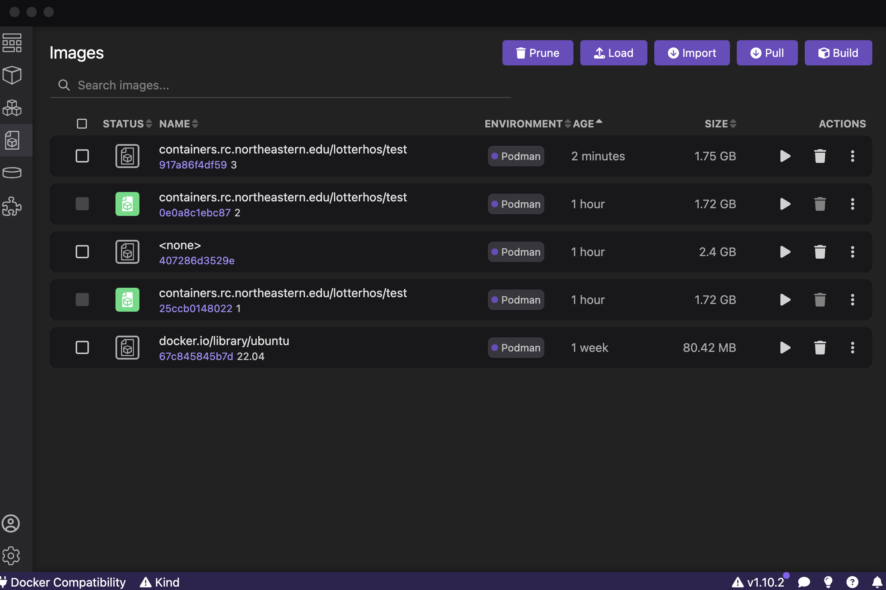
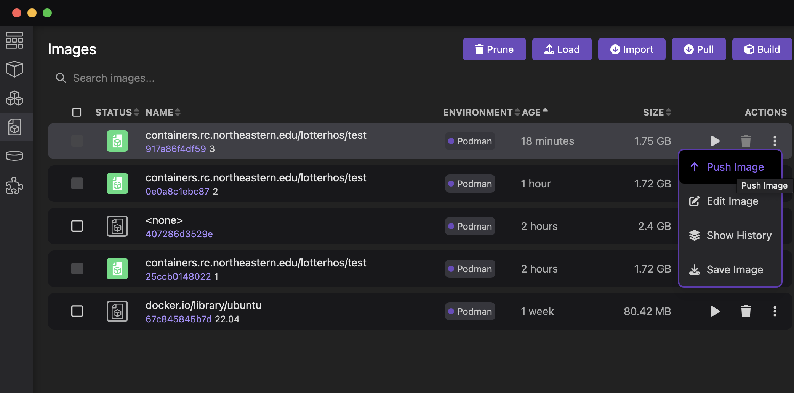

Software and Containers on Discovery for Lotterhos Lab
We currently use containers environments to run software on Discovery. Containers contain all the dependencies you need to run a program, so in theory they make getting started a lot easier!
First, read the research computing documentation: https://rc-docs.northeastern.edu/en/latest/containers/singularity.html
Part 0: Running an installed container
- You will need read access to
/work/lotterhos/Containers/
cd /work/lotterhos/Containers Go to the shared folder in the Lotterhos Lab Storage on Discovery where we keep the containers ls look at the list of containers. The containers will end with an sif extension, which is a singularity image.
And to run a container from anywhere type the following, but replace singularity run /work/lotterhos/Containers/<NAME>.sif
For example: singularity run /work/lotterhos/Containers/lumpy_0.2.13.sif
Part 1: Find a container on Dockerhub for a program you want to run, and create the disk image in the Lotterhos Lab Containers Folder on Discovery
You will need write access to
/work/lotterhos/Containers/on DiscoveryGo to DockerHub https://hub.docker.com
Use the search to find the program you need a container for
- for example, you could search for
samtools. There are a lot of results but this one looks promising! https://hub.docker.com/r/biocontainers/samtools - check the version of the program compared to the latest version. You may not be able to find out the version until you install it.
- for example, you could search for
Once you have the path to the container, on Discovery type the following commands:
srun --constraint=ib -p lotterhos --pty /bin/bash This takes you to a partition to run the code. The option ib = infiniband gives faster network connection, which you may need to download larger containers.
module load singularity/3.10.3 Singularity is the program that we will use to get the container from the web, download it, and run it
cd /work/lotterhos/Containers Go to the shared folder in the Lotterhos Lab Storage on Discovery where we keep the containers
export SINGULARITY_CACHEDIR=$(pwd)/cache set the cache directory. Singularity will cache files here when building the container.
export SINGULARITY_TMPDIR=$(pwd)/tmp set the tmp directory. Singularity will store tmp files here when building the container.
singularity pull docker://dceoy/lumpy:latest Pull the container from DockerHub. In this case, we pull the program lumpy from the user dceoy and it has the tag latest. The sif is the image (Container) file that Singularity will create after it pulls, and we name the file lumpy_latest.sif.
ls when you list files, you should see the lumpy_latest.sif in the file list
In practice, it’s not a good idea to save everything with the name latest, so it’s good practice to give it a name with the version:
mv lumpy_latest.sif lumpy_0.2.13.sif
And to run it from anywhere type:
singularity run /work/lotterhos/Containers/lumpy_0.2.13.sif
Part 2: Building your own Containers and run the disk image on your laptop or in the Lotterhos Lab Containers Folder on Discovery
- You will need write access to
/work/lotterhos/Containers/on Discovery
Step 1: Create the Dockerfile in a text editor on your laptop.
Create a Dockerfile and test it in PodMan Desktop.
The Dockerfile should just be named Dockerfile and nothing else - so make sure to have a good subdirectory organization and README files to avoid confusion.
The container basically builds an operating system from scratch - so the first several lines of the Dockerfile have to do exactly that.
Serena Caplins currently recommends the following header - everything down to the #Install FastQC line, which you would replace with the installation instructions for the programs you want to include.
Here is the text you can use to create and test your own Dockerfile. Make sure to give it the name Dockerfile with no extension!
FROM ubuntu:22.04
ENV TERM linux
ARG DEBIAN_FRONTEND=noninteractive
# Install base compilers and packages
RUN apt-get update && \
apt-get install -y build-essential \
software-properties-common \
xsltproc \
autoconf \
automake \
autotools-dev \
gfortran \
cmake \
protobuf-compiler \
make \
gcc \
wget \
git \
libc-dev \
python3-dev \
python3-pip \
csh \
libbz2-dev \
perl \
xsltproc \
docbook-xsl \
docbook-xml \
zlib1g-dev \
libeigen3-dev \
gfortran \
unzip \
vim \
nano \
pkg-config \
libfreetype6-dev \
libpng-dev \
python3-matplotlib \
default-jre \
bash \
libboost-dev \
liblzma-dev \
libcurl4-openssl-dev \
libssl-dev \
gdebi-core
# Install FastQC
WORKDIR /opt
RUN wget https://www.bioinformatics.babraham.ac.uk/projects/fastqc/fastqc_v0.12.1.zip && \
unzip fastqc_v0.12.1.zip && \
chmod 777 /opt/FastQC/fastqc && rm /opt/fastqc_v0.12.1.zip
# Fix language warning in FastQC
RUN apt-get update && DEBIAN_FRONTEND=noninteractive apt-get install -y locales && \
sed -i -e 's/# en_US.UTF-8 UTF-8/en_US.UTF-8 UTF-8/' /etc/locale.gen && \
dpkg-reconfigure --frontend=noninteractive locales && \
update-locale LANG=en_US.UTF-8
ENV LANG en_US.UTF-8
ENV PATH /opt:/opt/bcftools-1.19:/opt/plink2:/opt/console:/opt/pcangsd:/opt/angsd:/opt/angsd/misc:/opt/MultiQC:/opt/miniconda/bin:/opt/FastQC:/opt/vcftools/src/cpp:/opt/migrate-newest/src:/opt/ngsRelate:${PATH}
COPY startup.sh /opt
RUN chmod 777 /opt/startup.shNotes
Some notes on how to take instructions from a website and customize them for a container - for example let’s take the instructions from the website:
git clone --recursive git@github.com:arq5x/lumpy-sv.git
cd lumpy-sv
make
cp bin/* /usr/local/bin/.You would need to change this to:
RUN git clone --recursive https://github.com/arq5x/lumpy-sv.git /opt/lumpy-sv && \
cd /opt/lumpy-sv && make && cp bin/* /usr/local/bin/Make sure to change the git@github to https:// because the former will require you to set up key authentication.
When the instructions say to export PATH="$PATH:/opt/bin/htslib-1.9", you would convert this to:
ENV PATH="${PATH}:/opt/bin/htslib-1.9" OR ENV PATH="/opt/bin/htslib-1.9:${PATH}". It doesn’t really matter if the ${PATH} is at the beginning or end. Probably just a matter of preference or convention where you decide to put it. It does need to be somewhere though to include the other paths that are stored in ${PATH}. So when you run the ENV command it is appending ${PATH} instead of overwriting path.
For setting channels in conda, for my personal use I prefer to not have them set to my .condarc and just specify them when I run “conda install”. This is mainly because I don’t want any channel priority in case the same package is found in multiple channels. But this may just be a personal preference.
Step 2: Create the Container in PodMan Desktop on your laptop.
When you open Podman Desktop, make sure that you have containers.rc.northeastern.edu listed in your registries. To add it, just use the address and log in with your NU ID and password. 
Then, go to the Container Icon.  Click +Create and choose Containerfile or Dockerfile.
If the program proceeds normally, you should be prompted to specify the path to the Dockerfile that you just created on your laptop (first entry in figure below) and the Image Name. VERY IMPORTANT: The Image Name needs a path to our containers on research computing’s Harbor site: containers.rc.northeastern.edu/lotterhos/<ImageName:tag>. For example: containers.rc.northeastern.edu/lotterhos/test:3. The ImageName is a description, while the tag is the version of the container. They are seperated by a colon : and the program expects this naming system. By keeping the ImageName the same and updating the tag every time you make an edit to the container, the program can build the container faster each time from the cache for ImageName. Make sure to click Intel and AMD x86_64 because that is what you’ll need to run the container on Discovery! 
When it is done, you will see at the bottom of the output: Successfully built <code> Successfully tagged <ImageName:tag>
Troubleshooting (if you are unable to create a new container) If you are having trouble creating a new container, it may be because your PodMan Machine isn’t starting because it needs more memory or space than your computer can handle. In this case you would go to Settings-->Resources-->Podman-->Create new and select about half of the CPUs, Memory, and a small amount of disk size for your container. If you ask for too much, it will just wait forever for those resources to be allocated!
Step 3: Test the Container in PodMan Desktop on your laptop.
Next, go to the “Images” tab. The container that you just created is at the top. You will see the <ImageName> with the <tag> below. Here is an example for the test with the tag 3 that I just created:

Click the “Play” button next to the container you want to test. It will create a container. You can leave all the fields blank. Click “Start Container”. It will open the command line. Try running commands for the programs you installed.
To test fastqc, which is the program in the example Dockerfile above, type fastqc.
Step 4: Repeat Steps 1-3 until you finalize the container
Repeat Steps 1-3 until you finalize the container - edit the Dockerfile, remake the container, and create a test container from the image in Podman Desktop. It is an interative process.
Step 5: Push the image to containers.rc.northeastern.edu/lotterhos
From the Image tab, click the vertical ... and select Push Image. This will push it to our Harbor site.

Then you would log into Discovery and type the following:
srun --pty bash
module load singularity/3.10.3
cd /work/lotterhos/Containers
export SINGULARITY_CACHEDIR=$(pwd)/cache
export SINGULARITY_TMPDIR=$(pwd)/tmp
singularity pull --docker-login docker://containers.rc.northeastern.edu/lotterhos/<ImageName:version>ls when you list files, you should see the <ImageName>.sif in the file list In practice, it’s not a good idea to save everything with the name latest, so if necessary rename it with the mv command and give it a version.
And to run it from anywhere type: singularity run /work/lotterhos/Containers/<ImageName>
Part 3: Create the disk image in your own Containers folder on Discovery
In your home, scratch, or work directory create your own folder for Containers with subfolders for cache and tmp
mkdir Containers
cd Containers
mkdir cache
mkdir tmpThen, you basically follow all the steps above, but replace work/lotterhos/Containers with the path to this folder.
** Outdated Conda environments**
We use conda environments to load software on Discovery.
See this site for more information on how to load environments and update the yml files.
If you create a yml for your analysis, be sure to talk with Dr. L about sharing it with the group.
Shared Lotterhos Group Environments with Research Computing
lotterhos_R.yml
lotterhos_RADseq.yml
lotterhos_RNAseq.yml
lotterhos_aligners.yml
lotterhos_gatk.yml
lotterhos_methylation.yml
lotterhos_popgen.yml
lotterhos_utils.yml
lotterhos_variantCallers.ymlUse conda deactivate to change conda environments
information about outdated modules
When we first started using Discovery, we had modules set up for our research
We have a software module on Discovery for the lab’s research
There are some programs loaded in modules, and others loaded in conda environments. If you are working in a conda environment, it won’t detect programs loaded in the module outside that environment
One conda environment is
lotterhos-py38, which is running python 3.8. Note that many bioinformatics programs are not updated for this environment. Slim 3.3.2 is in this environment.Another conda environment is
ddocent2, which is running python 3.7 and all of the ddocent dependenciesmodule show lotterhos/2020-08-24 module load lotterhos/2020-08-24 source activate ddocent2 conda listUse the
module availcommand to show a list of the most currently available software on Discovery.
sratoolkit/2.10.8 was added as a seperate module that was then added to your module, while ddocent-2.7.8 was added to the conda environment “lotterhos-py38” within the anaconda3/L2020-03 module
Old module: lotterhos/2019-11-15, lotterhos/2020-03-18, lotterhos/2020-07-21
- In the future we hope to work on Docker containers for loading R packages and developing containers for specific projects. A container allows you to create the same environment that you were using when you analyzed the data.
PackRat environments for R
PackRat environments can be great for using on OOD or Discovery